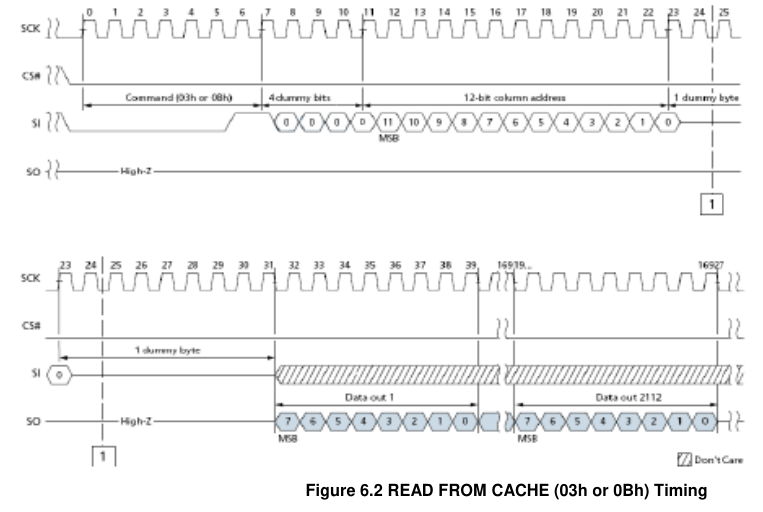
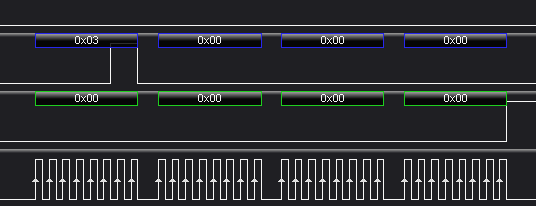

Introduction to FlashROM
It’s been more than half a year since my last post. The firmware extraction series has already reached Part 11. This one isn’t particularly hard in my opinion, so I can publish it openly.
Flashrom is an open-source project for extracting (and programming) flash firmware. It supports multiple hardware platforms, SPI flash, and parallel flash.
This time I ran into a NAND SPI flash: IS38SML01G1, an automotive-grade storage chip. At first I assumed “SPI flash” always meant NOR, so I didn’t read the datasheet and tried to wire it up and read it with a typical programmer. Most common programmers couldn’t read it; I also tried an RT809H and failed. After checking the datasheet, I realized it was NAND flash. At the time, only REVELPROG-IS supported read/write for it.
Initially I wanted to use an FT2232HL, but found the official documentation/support for that chip not great, so I ended up using a Raspberry Pi 3B.
The flashchips.c file stores configuration information for various chips—very well designed and highly extensible.
{
.vendor = Vendor name
.name = Chip name
.bustype = Supported flash bus types (Parallel, LPC...)
.manufacture_id = Manufacturer chip ID
.model_id = Model chip ID
.total_size = Total size in (binary) kbytes
.page_size = Page or eraseblock(?) size in bytes
.tested = Test status
.probe = Probe function
.probe_timing = Probe function delay
.block_erasers[] = Array of erase layouts and erase functions
{
.eraseblocks[] = Array of { blocksize, blockcount }
.block_erase = Block erase function
}
.printlock = Chip lock status function
.unlock = Chip unlock function
.write = Chip write function
.read = Chip read function
.voltage = Voltage range in millivolt
}
Based on the datasheet, I added configuration for the 38SM device.
From the datasheet: a NAND SPI flash has 1024 blocks, each block has 64 pages, and each page is 2K + 64 bytes, where the 64 bytes are the spare area.
total_size is in KB, so there’s no need to include the spare area in the size. The voltage range is set to 2.7V–3.6V per the datasheet.
{
.vendor = "ISSI",
.name = "IS38SML01G1",
.bustype = BUS_SPI,
.manufacture_id = ISSI_NAND_ID,
.model_id = ISSI_NAND_ID_SPI,
.total_size = 131072, /* kb */
.page_size = 2048, /* bytes, actual page size is 64 */
.tested = {.probe = OK, .read = OK, .erase = NA, .write = NA},
.probe = probe_spi_rdid5,
.probe_timing = TIMING_ZERO,
.block_erasers =
{
{
.eraseblocks = { {64 * 2048, 1024} },
.block_erase = spi_block_erase_d8,
}
},
.write = NULL,
.read = spi_read_issi,
.voltage = {2700, 3600},
},
To read the flash contents, you need to implement chip initialization and read functionality. So we only need to provide pointers for probe and read. The figure below shows the command definitions, including the opcode byte, address bytes, dummy bytes, and the data bytes returned by the device. Data is transferred MSB-first.

Initialization needs to read the ID, so first define the chip IDs. The Mark Code and Device Code are useful. I also added the Communication Code 0x7F7F7F while I was at it.

#define ISSI_NAND_ID 0xC8
#define ISSI_NAND_ID_SPI 0x21
#define ISSI_38SML01G1 0x7F7F7F
Flashrom’s built-in probe_spi_rdid4 reads the JEDEC ID by sending 0x9F, but this chip requires one dummy byte when sending the Read ID command. If you use the normal probe_spi_rdid, the first byte you read becomes 0x00. The timing diagram quality in the ISSI datasheet is extremely low.

So we need a new function, named probe_spi_rdid5. We also add a read function spi_read_issi. Both need to be declared in chipdrivers.h.
int probe_spi_rdid5(struct flashctx *flash);
int spi_read_issi(struct flashctx *flash, uint8_t *buf, unsigned int start, unsigned int len);
For the Read ID function: if the first byte is 0x00, skip it and continue. Alternatively, you can include a dummy byte when sending the ID command, avoiding the need to check MISO data.
int probe_spi_rdid5(struct flashctx *flash)
{
const struct flashchip *chip = flash->chip;
unsigned char readarr[6];
uint32_t id1;
uint32_t id2;
uint32_t bytes = 6;
if (spi_rdid(flash, readarr, bytes)) {
return 0;
}
if (!oddparity(readarr[0]))
msg_cdbg("RDID byte 0 parity violation. ");
/* Check if this is a continuation vendor ID.
* FIXME: Handle continuation device IDs.
*/
if (readarr[0] == 0x00) {
if (!oddparity(readarr[1]))
msg_cdbg("RDID byte 1 parity violation. ");
id1 = (readarr[0] << 8) | readarr[1];
id2 = readarr[2];
} else {
id1 = readarr[0];
id2 = (readarr[1] << 8) | readarr[2];
}
msg_cdbg("%s: id1 0x%02x, id2 0x%02x\n", __func__, id1, id2);
if (id1 == chip->manufacture_id && id2 == chip->model_id)
return 1;
/* Test if this is a pure vendor match. */
if (id1 == chip->manufacture_id && GENERIC_DEVICE_ID == chip->model_id)
return 1;
/* Test if there is any vendor ID. */
if (GENERIC_MANUF_ID == chip->manufacture_id && id1 != 0xff && id1 != 0x00)
return 1;
return 0;
}
Next is the read function. First, you need to understand the chip’s read flow: the NAND controller first loads NAND data into the cache memory (one page at a time), then reads data out from the cache and outputs it to the host.

So you must first send a page-read command and tell the controller which page to read. While NAND data is being transferred into the cache, you must not perform other read/write operations. At this time, the status register should indicate busy, i.e. OIP == 1.
After sending the page-read command, you should poll by sending 0x0F 0xC0 in a loop until OIP == 0.

So a complete read sequence is:
0x13 page read
0x0F 0xC0 status polling
0x03 cache read
According to the command definition, page-read uses 3 address bytes, where 1 byte is dummy, so the maximum address is 0xFFFF (65536 in decimal). 1024 blocks * 64 pages = 65536 pages. Here I temporarily interpret the dummy byte as [7:0], and the address as [23:8].

For cache read, the address length is 2 bytes, plus 1 byte + 4 bits of dummy cycles, so the cache addressing is 12 bits (4096). The datasheet-defined range is 0–2112, which you can interpret as 2048 bytes + 64 bytes (OOB area).

Below is the implementation of spi_read_issi.
int spi_read_issi(struct flashctx *flash, uint8_t *buf, unsigned int start, unsigned int len)
{
uint8_t cmd[4];
uint8_t page_read_resp[1];
unsigned int ret = 0;
unsigned int buf_off = 0;
uint8_t cache_read_cmd[4];
uint8_t get_feature_cmd[2] = {0x0f, 0xc0};
for (unsigned int address_h = 0; address_h < 256; address_h++)
{
for (unsigned int address_l = 0; address_l < 256; address_l++)
{
cmd[0] = 0x13; /* page read cmd */
cmd[1] = 0x00; /* dummy byte */
cmd[3] = (uint8_t)address_h;
cmd[2] = (uint8_t)address_l;
ret = spi_send_command(flash, sizeof(cmd), 1, cmd, page_read_resp);
/* 7-0 bits: ECC_S1, ECC_S0, P_Fail, E_Fail, WEL3, OIP */
uint8_t status[1] = {0};
int get_feature_ret = 1;
{
internal_sleep(10);
get_feature_ret = spi_send_command(flash, sizeof(get_feature_cmd), sizeof(status), get_feature_cmd, status);
}while (get_feature_ret);
/* printf("\nStatus: 0x%X, get_feature_ret:%d\n", (unsigned int)status[0], get_feature_ret); */
cache_read_cmd[0] = 0x03; /* page read cmd */
cache_read_cmd[1] = 0x00;
cache_read_cmd[2] = 0x00;
cache_read_cmd[3] = 0x00; /* dummy byte */
if (status[0] == 0)
{
int cache_read_ret = spi_send_command(flash, sizeof(cache_read_cmd), 2048, cache_read_cmd, buf + 2048 * buf_off);
ret = cache_read_ret;
} else {
printf("device busy. timeout\n");
ret = spi_send_command(flash, sizeof(get_feature_cmd), sizeof(status), get_feature_cmd, status);
}
/* Send Read */
unsigned int *buf_addr = (unsigned int *)((unsigned int)buf + 2048 * buf_off);
if (buf_addr[0] != 0xffffffff){
printf("buf_off:%d, address: 0x%x%x\nbuf_addr: 0x%X\ndata:\n", buf_off, (int) cmd[2], (int)cmd[1], (unsigned int)buf_addr);
/*int* = 4* int8 */
for (int b = 0; b < 512; b++)
{
printf("%08x", buf_addr[b]);
}
printf("\n");
}
// printf("\n");
if (ret){
printf("reading err");
break;
}
buf_off++;
}
}
return ret;
}
Fly-wiring
First, use a clip fixture. Heat with a hot-air gun at 400°C, preheating from the bottom for 12 seconds.

Solder the chip onto an adapter board.

At first I didn’t consider that the bottom of the WSON package could cause shorts, so I reworked the fly-wires.


Connect to a Raspberry Pi 3B.

Wiring is as follows. HOLD should be tied to VCC.
| RPi header | SPI flash |
|---|---|
| 25 | GND |
| 24 | /CS |
| 23 | SCK |
| 21 | DO |
| 19 | DI |
| 17 | VCC 3.3V (+ /HOLD, /WP) |
Enable SPI.
vi /boot/config.txt
dtparam=spi=on
Load kernel modules.
# If that fails you may wanna try the older spi_bcm2708 module instead
sudo modprobe spi_bcm2835
sudo modprobe spidev
flashrom -p linux_spi:dev=/dev/spidev0.0,spispeed=10000 -c IS38SML01G1 -V -r /tmp/is38_nooob.bin

Target Device Initialization Analysis
The 128MB dump was almost entirely 0xFF. But after asking the vendor, they confirmed this chip stores some software and configuration data. The ISSI flash datasheet didn’t clearly document the address format for page reads. The address is 3 bytes; the high and low bytes are consecutive, so there are two permutations. Combined with the dummy byte, there are four possible address formats, and I couldn’t tell which one was correct. I dumped all four variants; only the distribution changed, and there was still no way to confirm the correct mapping.


With a driver implemented strictly according to the datasheet, the dump still came out almost entirely 0xFF, so I suspected something was wrong and brought in a logic analyzer.
You only need to capture three channels: MOSI, MISO, CLK. Use MSB; set CPOL and CPHA to 0.


Trigger on the rising edge; set sampling rate to 200MHz. First, I captured the SPI traffic when the Raspberry Pi was reading the flash. It matched the datasheet.
Read JEDEC ID:

Read status:

When reading cache, after sending 4 bytes, MISO stayed high the whole time, which made it feel like something was off.

Then I captured traffic from the target device.

First, reading the JEDEC ID was fine. Compared to the Raspberry Pi, the target device only returned the first two ID bytes.

From page read to cache read: it sends the page-read command, then reads status, waits for the controller to return 0, then sends the cache-read command. This is where things went wrong. MISO still output 0xFF, but in 4-byte chunks; after each 4-byte output, the master would “receive” 4 bytes of unknown meaning, alternating in a loop. 0x03 is confirmed to be single-lane transfer, and on the Raspberry Pi, MOSI wouldn’t generate any data during this phase, which suggests those bytes weren’t coming from the slave.

At least this suggests my code wasn’t the issue—rather, the device wasn’t actually using this storage chip at the moment.
Consequences of Reading the OOB
At first I tried to dump the spare area as well, so I set the response buffer to 2112 bytes. In the dump file, I saw an ELF header, and initially thought the target device used ELF binaries. But something felt off—why would an automotive gateway run Linux?

Later, after checking the memory address layout, it looked like I exceeded the heap size and did an out-of-bounds read into subsequent library data.

If you do the math: the first segment is the actual heap size, the second is the actual read size, and the third is the normal read size—so don’t read the spare area.

REVELPROG-IS Unboxing
More than a month later, I bought a REVELPROG-IS to verify whether flashrom’s read results were correct.

Made in Poland. The packaging and programmer look decent.

The circuit design is simple: one STM32F103. It’s a bit pricey, but at least it hasn’t been cloned aggressively.

Verifying the Dump
The WSON8 socket hadn’t arrived yet, so I temporarily used fly-wires.

The read speed was extremely slow and took a few minutes. It doesn’t support speed adjustment—flashrom is still the fastest.

The data read was consistent with the earlier dump.

The address format matches the third variant. I forgot the exact ordering, but I’ll use this programmer for future dumps.

Errata
In later research, I found a few pitfalls in this post.
address_h and address_l were assumptions made without knowing the actual addressing rules, because the datasheet didn’t document them. I assumed both were 8-bit.
After reading datasheets for several other chips, I confirmed this was problematic.

In reality, these two parameters represent the block address and page address. The device has 1024 blocks (10 bits) and 64 pages per block (6 bits), totaling exactly 16 bits. Different chip capacities follow different rules.
So the read results can contain repeats. Also, since the valid data happened to be distributed near the beginning of the storage and the rest was invalid, the final result still looked consistent with the programmer’s dump—even with a wrong address interpretation.
Additionally, the status check in the sample code is not strictly correct: status doesn’t have to be 0 for reads to work. BBM LUT FULL (Look-Up Table) may also be 1, and ECC Err Status can be 0x20.

 CC BY-NC-SA 4.0
CC BY-NC-SA 4.0